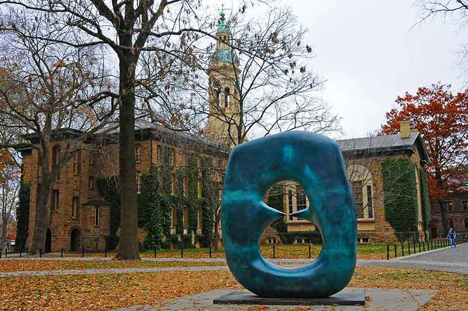
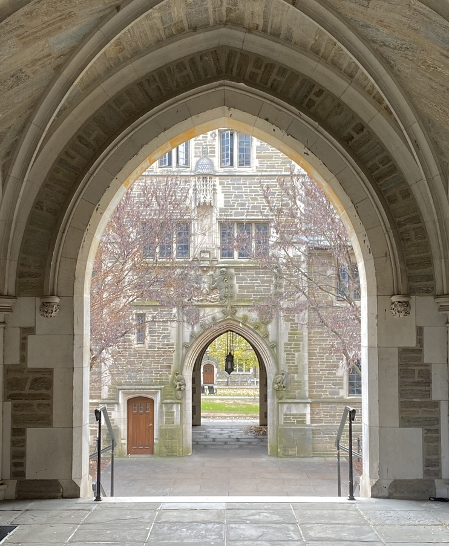
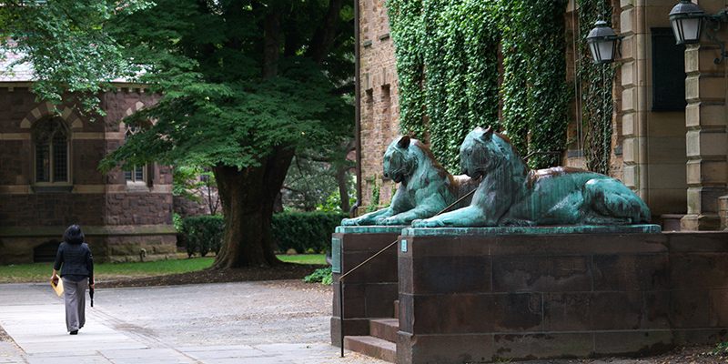

Historical, cultural and recreational — there are new places to see and things to discover all over town.
Plan Your Princeton Visit Today!

Entertainment01

Architectural02

Activities03
Visit Princeton NJ
Princeton offers a variety of activities for visitors of every age and interest — see a show, meet a friend for coffee, wander through a park, relax at a spa, savor an elegant meal or grab a quick bite.
Discovering the Charms of Your Getaway
Embark on a journey of leisure and discovery, where every street is a step deeper into the town's history.
Trail networks and connections across several counties, protected since 1989.

Two charming hotels
in the center of town

Plan Your Princeton Stay Now!
Whether you are staying a night, a week, or even longer
…you will find two charming hotels right in the centre, with restaurants and attractions within walking distance.
Redefining a weekend away in a town built for wandering

Escape to a town where history meets a genuinely walkable centre.
01What is there to do in the centre?
See a show, meet a friend for coffee, wander through a park, relax at a spa, or savor an elegant meal — all within a few streets of each other.
learn more
02How well connected is the town?
Princeton sits halfway between New York City and Philadelphia. Trains stop at nearby Princeton Junction, and the Dinky shuttle finishes the trip.
03What is special about the campus?
Pristine grounds, historical significance, stunning architecture, majestic performance halls and places of worship — free to wander.
04When does the town look its best?
Cherry blossoms late March to early April, foliage mid to late October, and Palmer Square in December. May and September bring the most pleasant weather.
Gallery



Nature, architecture and history — your perfect escape, all within walking distance.